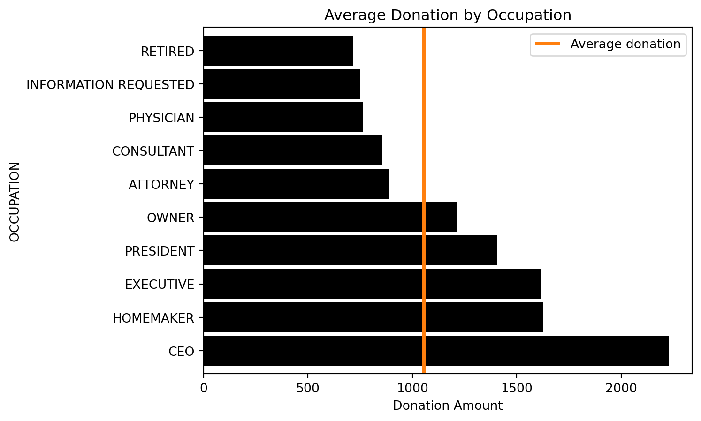
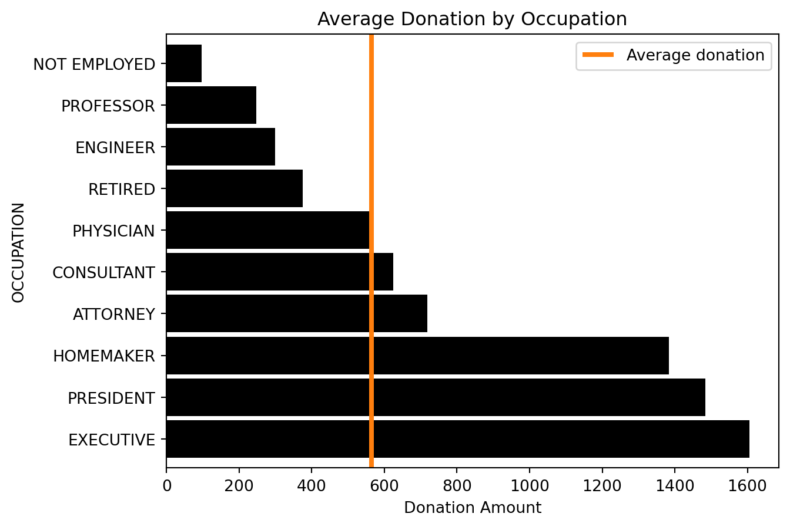
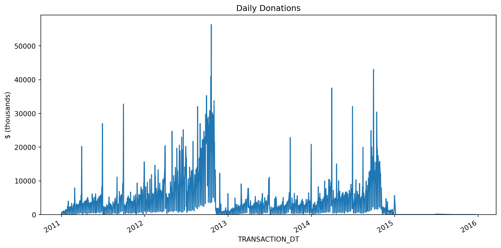
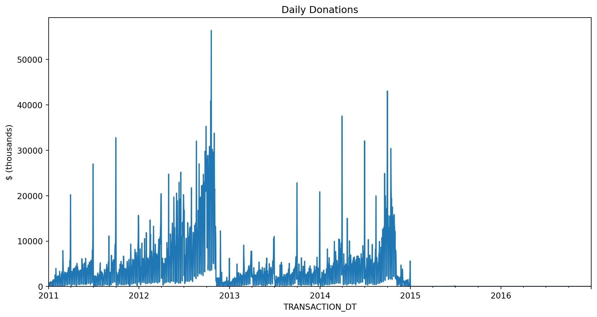
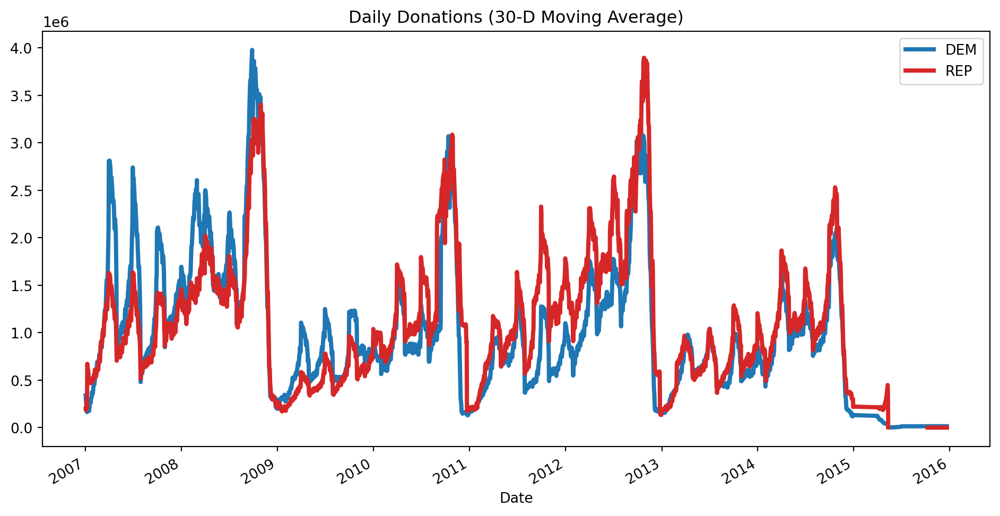
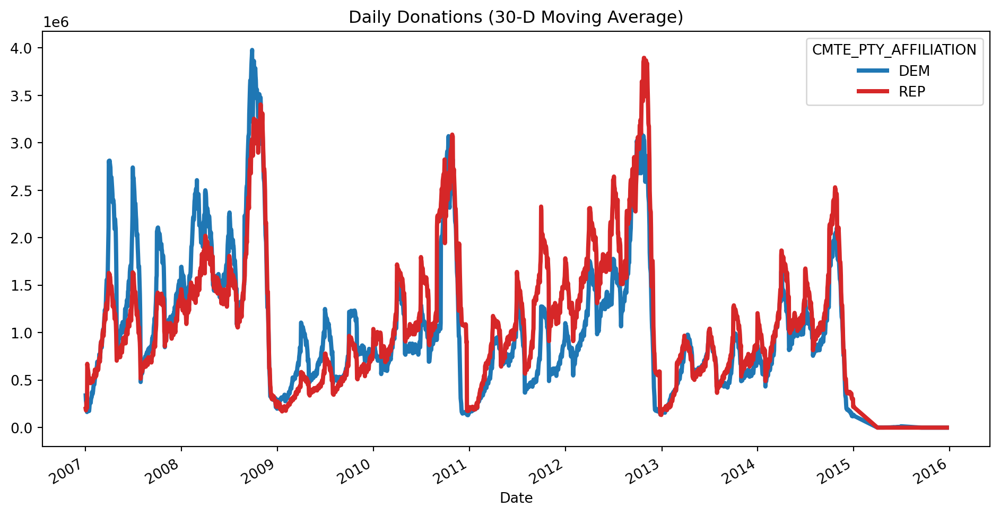

import asyncio
from zipfile import ZipFile
from pathlib import Path
from datetime import date
from io import BytesIO
import httpx
import polars as pl
import pandas as pd
pl.Config.set_tbl_rows(5)
pd.options.display.max_rows = 5
fec_dir = Path("../data/fec")
async def download_and_save_cm(year: str, client: httpx.AsyncClient):
cm_cols = ["CMTE_ID", "CMTE_NM", "CMTE_PTY_AFFILIATION"]
dtypes = {"CMTE_PTY_AFFILIATION": pl.Categorical}
url = f"https://www.fec.gov/files/bulk-downloads/20{year}/cm{year}.zip"
resp = await client.get(url)
with ZipFile(BytesIO(resp.content)) as z:
pl.read_csv(
z.read("cm.txt"),
has_header=False,
columns=[0, 1, 10],
new_columns=cm_cols,
separator="|",
dtypes=dtypes,
).write_parquet(fec_dir / f"cm{year}.pq")
async def download_and_save_indiv(year: str, client: httpx.AsyncClient):
dtypes = {
"CMTE_ID": pl.Utf8,
"EMPLOYER": pl.Categorical,
"OCCUPATION": pl.Categorical,
"TRANSACTION_DT": pl.Utf8,
"TRANSACTION_AMT": pl.Int32,
}
url = f"https://www.fec.gov/files/bulk-downloads/20{year}/indiv{year}.zip"
resp = await client.get(url)
with ZipFile(BytesIO(resp.content)) as z:
pl.read_csv(
z.read("itcont.txt"),
has_header=False,
columns=[0, 11, 12, 13, 14],
new_columns=list(dtypes.keys()),
separator="|",
dtypes=dtypes,
encoding="cp1252",
).with_columns(
pl.col("TRANSACTION_DT").str.to_date(format="%m%d%Y", strict=False)
).write_parquet(
fec_dir / f"indiv{year}.pq"
)
years = ["08", "10", "12", "14", "16"]
if not fec_dir.exists():
fec_dir.mkdir()
async with httpx.AsyncClient(follow_redirects=True, timeout=None) as client:
cm_tasks = [download_and_save_cm(year, client) for year in years]
indiv_tasks = [download_and_save_indiv(year, client) for year in years]
tasks = cm_tasks + indiv_tasks
await asyncio.gather(*tasks)6 Scaling
In this chapter we’ll mostly compare Polars to Dask rather than to Pandas. This isn’t an apples-to-apples comparison, because Dask helps scale Pandas but it might help scale Polars too one day. Dask, like Spark, can run on a single node or on a cluster with thousands of nodes.
Polars doesn’t come with any tooling for running on a cluster, but it does have a streaming mode for larger-than-memory datasets on a single machine. It also uses memory more efficiently than Pandas. These two things mean you can use Polars for much bigger data than Pandas can handle, and hopefully you won’t need tools like Dask or Spark until you’re actually running on a cluster.
Note
I use “Dask” here as a shorthand for dask.dataframe. Dask does a bunch of other stuff too.
Warning
The streaming features of Polars are very new at the time of writing, so approach with caution!
6.1 Get the data
We’ll be using political donation data from the FEC. Warning: this takes a few minutes.
6.2 Simple aggregation
Suppose we want to find the most common occupations among political donors. Let’s assume that this data is too big for your machine’s memory to read it in all at once.
We can solve this using Polars streaming, using Dask’s lazy dataframe or simply using Pandas to read the files one by one and keeping a running total:
# otherwise we can't read categoricals from multiple files
pl.enable_string_cache()
occupation_counts_pl = (
pl.scan_parquet(fec_dir / "indiv*.pq", cache=False)
.select(pl.col("OCCUPATION").value_counts(parallel=True, sort=True))
.collect(streaming=True)
)
occupation_counts_pl
shape: (344_119, 1)
| OCCUPATION |
|---|
| struct[2] |
| {"RETIRED",1643920} |
| {"ATTORNEY",826173} |
| {null,620316} |
| … |
| {"PURNELL MORROW COMPANY",1} |
| {"CITY OF BISHOP",1} |
import dask.dataframe as dd
from dask import compute
occupation_counts_dd = dd.read_parquet(
fec_dir / "indiv*.pq", engine="pyarrow", columns=["OCCUPATION"]
)["OCCUPATION"].value_counts()
occupation_counts_dd.compute()OCCUPATION
RETIRED 1643920
ATTORNEY 826173
...
ADUSTON CONSULTING 1
SR, IMMIGRATION PARALEGAL 1
Name: count, Length: 344118, dtype: int64files = sorted(fec_dir.glob("indiv*.pq"))
total_counts_pd = pd.Series(dtype="int64")
for year in files:
occ_pd = pd.read_parquet(year, columns=["OCCUPATION"], engine="pyarrow")
counts = occ_pd["OCCUPATION"].value_counts()
total_counts_pd = total_counts_pd.add(counts, fill_value=0).astype("int64")
total_counts_pd.nlargest(100)OCCUPATION
RETIRED 1643920
ATTORNEY 826173
...
ECONOMIST 9336
ENTREPRENEUR 9199
Length: 100, dtype: int64
Note
Polars can handle some larger-than-memory data even without streaming. Thanks to predicate pushdown, we can filter dataframes without reading all the data into memory first. So streaming mode is most useful for cases where we really do need to read in a lot of data.
6.3 Executing multiple queries in parallel
Often we want to generate multiple insights from the same data, and we need them in separate dataframes. In this case, using collect_all is more efficient than calling .collect multiple times, because Polars can avoid repeating common operations like reading the data.
Let’s compute the average donation size, the total donated by employer and the average donation by occupation:
%%time
indiv_pl = pl.scan_parquet(fec_dir / "indiv*.pq")
avg_transaction_lazy_pl = indiv_pl.select(pl.col("TRANSACTION_AMT").mean())
total_by_employer_lazy_pl = (
indiv_pl.drop_nulls("EMPLOYER")
.group_by("EMPLOYER")
.agg([pl.col("TRANSACTION_AMT").sum()])
.sort("TRANSACTION_AMT", descending=True)
.head(10)
)
avg_by_occupation_lazy_pl = (
indiv_pl.group_by("OCCUPATION")
.agg([pl.col("TRANSACTION_AMT").mean()])
.sort("TRANSACTION_AMT", descending=True)
.head(10)
)
avg_transaction_pl, total_by_employer_pl, avg_by_occupation_pl = pl.collect_all(
[avg_transaction_lazy_pl, total_by_employer_lazy_pl, avg_by_occupation_lazy_pl],
streaming=True,
comm_subplan_elim=False, # cannot use CSE with streaming
)CPU times: user 10.3 s, sys: 1.91 s, total: 12.2 s
Wall time: 4.51 s%%time
indiv_dd = (
dd.read_parquet(fec_dir / "indiv*.pq", engine="pyarrow")
# pandas and dask want datetimes but this is a date col
.assign(
TRANSACTION_DT=lambda df: dd.to_datetime(df["TRANSACTION_DT"], errors="coerce")
)
)
avg_transaction_lazy_dd = indiv_dd["TRANSACTION_AMT"].mean()
total_by_employer_lazy_dd = (
indiv_dd.groupby("EMPLOYER", observed=True)["TRANSACTION_AMT"].sum().nlargest(10)
)
avg_by_occupation_lazy_dd = (
indiv_dd.groupby("OCCUPATION", observed=True)["TRANSACTION_AMT"].mean().nlargest(10)
)
avg_transaction_dd, total_by_employer_dd, avg_by_occupation_dd = compute(
avg_transaction_lazy_dd, total_by_employer_lazy_dd, avg_by_occupation_lazy_dd
)CPU times: user 26.5 s, sys: 1.67 s, total: 28.1 s
Wall time: 21.8 sThe Polars code above tends to be ~3.5x faster than Dask on my machine, which if anything is a smaller speedup than I expected.
We should also profile memory usage, since it could be the case that Polars is just running faster because it’s reading in bigger chunks. According to the fil profiler, the Dask example’s memory usage peaks at 1450 MiB, while Polars uses ~10% more than that.
Before I forget, here are the results of our computations:
6.3.1 avg_transaction
avg_transaction_pl
shape: (1, 1)
| TRANSACTION_AMT |
|---|
| f64 |
| 1056.45334 |
avg_transaction_dd1056.45334041882856.3.2 total_by_employer
total_by_employer_pl
shape: (10, 2)
| EMPLOYER | TRANSACTION_AMT |
|---|---|
| cat | i32 |
| "RETIRED" | 694090644 |
| "SELF-EMPLOYED" | 561802551 |
| "SELF" | 403477909 |
| … | … |
| "FAHR, LLC" | 76995400 |
| "CANDIDATE" | 73542276 |
total_by_employer_ddEMPLOYER
RETIRED 694090644
SELF-EMPLOYED 561802551
...
FAHR, LLC 76995400
CANDIDATE 73542276
Name: TRANSACTION_AMT, Length: 10, dtype: int326.3.3 avg_by_occupation
avg_by_occupation_pl
shape: (10, 2)
| OCCUPATION | TRANSACTION_AMT |
|---|---|
| cat | f64 |
| "PAULSON AND CO., INC." | 1e6 |
| "CO-FOUNDING DIRECTOR" | 875000.0 |
| "CO-FOUNDER, DIRECTOR" | 550933.333333 |
| … | … |
| "CO-PRINCIPAL" | 367000.0 |
| "STEPHEN PATRICK LAFFEY" | 333692.0 |
avg_by_occupation_ddOCCUPATION
PAULSON AND CO., INC. 1000000.0
CO-FOUNDING DIRECTOR 875000.0
...
CO-PRINCIPAL 367000.0
STEPHEN PATRICK LAFFEY 333692.0
Name: TRANSACTION_AMT, Length: 10, dtype: float646.4 Filtering
Let’s filter for only the 10 most common occupations and compute some summary statistics:
6.4.1 avg_by_occupation, filtered
Getting the most common occupations:
top_occupations_pl = (
occupation_counts_pl.select(
pl.col("OCCUPATION")
.struct.field("OCCUPATION")
.drop_nulls()
.head(10)
)
.to_series()
)
top_occupations_pl
shape: (10,)
| OCCUPATION |
|---|
| cat |
| "RETIRED" |
| "ATTORNEY" |
| "PRESIDENT" |
| … |
| "CONSULTANT" |
| "CEO" |
top_occupations_dd = occupation_counts_dd.head(10).index
top_occupations_ddCategoricalIndex(['RETIRED', 'ATTORNEY', 'PRESIDENT', 'PHYSICIAN', 'HOMEMAKER',
'INFORMATION REQUESTED', 'EXECUTIVE', 'OWNER', 'CONSULTANT',
'CEO'],
categories=['PUBLIC RELATIONS CONSULTANT', 'PRESIDENT', 'PHYSICIAN', 'SENIOR EXECUTIVE', ..., 'PRODUCT DIST', 'EXECUTIVE VICE PRESIDENT, CHIEF COMMUN', 'ACTOR/TEACHER/D', 'SR, IMMIGRATION PARALEGAL'], ordered=False, dtype='category', name='OCCUPATION')donations_pl_lazy = (
indiv_pl.filter(pl.col("OCCUPATION").is_in(top_occupations_pl.to_list()))
.group_by("OCCUPATION")
.agg(pl.col("TRANSACTION_AMT").mean())
)
total_avg_pl, occupation_avg_pl = pl.collect_all(
[indiv_pl.select(pl.col("TRANSACTION_AMT").mean()), donations_pl_lazy],
streaming=True,
comm_subplan_elim=False
)donations_dd_lazy = (
indiv_dd[indiv_dd["OCCUPATION"].isin(top_occupations_dd)]
.groupby("OCCUPATION", observed=True)["TRANSACTION_AMT"]
.mean()
.dropna()
)
total_avg_dd, occupation_avg_dd = compute(
indiv_dd["TRANSACTION_AMT"].mean(), donations_dd_lazy
)6.4.2 Plotting
These results are small enough to plot:
ax = (
occupation_avg_pl
.to_pandas()
.set_index("OCCUPATION")
.squeeze()
.sort_values(ascending=False)
.plot.barh(color="k", width=0.9)
)
lim = ax.get_ylim()
ax.vlines(total_avg_pl, *lim, color="C1", linewidth=3)
ax.legend(["Average donation"])
ax.set(xlabel="Donation Amount", title="Average Donation by Occupation")[Text(0.5, 0, 'Donation Amount'),
Text(0.5, 1.0, 'Average Donation by Occupation')]
ax = occupation_avg_dd.sort_values(ascending=False).plot.barh(color="k", width=0.9)
lim = ax.get_ylim()
ax.vlines(total_avg_dd, *lim, color="C1", linewidth=3)
ax.legend(["Average donation"])
ax.set(xlabel="Donation Amount", title="Average Donation by Occupation")[Text(0.5, 0, 'Donation Amount'),
Text(0.5, 1.0, 'Average Donation by Occupation')]
6.5 Resampling
Resampling is another useful way to get our data down to a manageable size:
daily_pl = (
indiv_pl.select(["TRANSACTION_DT", "TRANSACTION_AMT"])
.drop_nulls()
.sort("TRANSACTION_DT")
.group_by_dynamic("TRANSACTION_DT", every="1d")
.agg(pl.col("TRANSACTION_AMT").sum())
.filter(
pl.col("TRANSACTION_DT")
.is_between(date(2011, 1, 1), date(2017, 1, 1), closed="left")
)
.with_columns(pl.col("TRANSACTION_AMT") / 1000)
.collect(streaming=True)
)
ax = (
daily_pl.select(
[pl.col("TRANSACTION_DT").cast(pl.Datetime), "TRANSACTION_AMT"]
)
.to_pandas()
.set_index("TRANSACTION_DT")
.squeeze()
.plot(figsize=(12, 6))
)
ax.set(ylim=0, title="Daily Donations", ylabel="$ (thousands)")[(0.0, 59192.975450000005),
Text(0.5, 1.0, 'Daily Donations'),
Text(0, 0.5, '$ (thousands)')]
daily_dd = (
indiv_dd[["TRANSACTION_DT", "TRANSACTION_AMT"]]
.dropna()
.set_index("TRANSACTION_DT")["TRANSACTION_AMT"]
.resample("D")
.sum()
.loc["2011":"2016"]
.div(1000)
.compute()
)
ax = daily_dd.plot(figsize=(12, 6))
ax.set(ylim=0, title="Daily Donations", ylabel="$ (thousands)")[(0.0, 59192.97545),
Text(0.5, 1.0, 'Daily Donations'),
Text(0, 0.5, '$ (thousands)')]
6.6 Joining
Polars joins work in streaming mode. Let’s add join the donations data with the committee master data, which contains information about the committees people donate to.
cm_pl = (
# This data is small so we don't use streaming.
# Also, .last isn't available in lazy mode.
pl.read_parquet(fec_dir / "cm*.pq")
# Some committees change their name, but the ID stays the same
.group_by("CMTE_ID", maintain_order=True).last()
)
cm_pl
shape: (28_467, 3)
| CMTE_ID | CMTE_NM | CMTE_PTY_AFFILIATION |
|---|---|---|
| str | str | cat |
| "C00000042" | "ILLINOIS TOOL WORKS INC. FOR B… | null |
| "C00000059" | "HALLMARK CARDS PAC" | "UNK" |
| "C00000422" | "AMERICAN MEDICAL ASSOCIATION P… | null |
| … | … | … |
| "C90017336" | "LUDWIG, EUGENE" | null |
| "C90017542" | "CENTER FOR POPULAR DEMOCRACY A… | null |
cm_dd = (
# This data is small but we use dask here as a
# convenient way to read a glob of files.
dd.read_parquet(fec_dir / "cm*.pq")
.compute()
# Some committees change their name, but the
# ID stays the same.
# If we use .last instead of .nth(-1),
# we get the last non-null value
.groupby("CMTE_ID", as_index=False)
.nth(-1)
)
cm_dd| CMTE_ID | CMTE_NM | CMTE_PTY_AFFILIATION | |
|---|---|---|---|
| 7 | C00000794 | LENT & SCRIVNER PAC | UNK |
| 15 | C00001156 | MICHIGAN LEAGUE OF COMMUNITY BANKS POLITICAL A... | NaN |
| ... | ... | ... | ... |
| 17649 | C99002396 | AMERICAN POLITICAL ACTION COMMITTEE | NaN |
| 17650 | C99003428 | THIRD DISTRICT REPUBLICAN PARTY | REP |
28467 rows × 3 columns
Merging:
indiv_filtered_pl = indiv_pl.filter(
pl.col("TRANSACTION_DT").is_between(
date(2007, 1, 1), date(2017, 1, 1), closed="both"
)
)
merged_pl = indiv_filtered_pl.join(cm_pl.lazy(), on="CMTE_ID")indiv_filtered_dd = indiv_dd[
(indiv_dd["TRANSACTION_DT"] >= pd.Timestamp("2007-01-01"))
& (indiv_dd["TRANSACTION_DT"] <= pd.Timestamp("2017-01-01"))
]
merged_dd = dd.merge(indiv_filtered_dd, cm_dd, on="CMTE_ID")Daily donations by party:
party_donations_pl = (
merged_pl.group_by(["TRANSACTION_DT", "CMTE_PTY_AFFILIATION"])
.agg(pl.col("TRANSACTION_AMT").sum())
.sort(["TRANSACTION_DT", "CMTE_PTY_AFFILIATION"])
.collect(streaming=True)
)party_donations_dd = (
(
merged_dd.groupby(["TRANSACTION_DT", "CMTE_PTY_AFFILIATION"])[
"TRANSACTION_AMT"
].sum()
)
.compute()
.sort_index()
)Plotting daily donations:
ax = (
party_donations_pl
.pivot(
index="TRANSACTION_DT", on="CMTE_PTY_AFFILIATION", values="TRANSACTION_AMT"
)[1:, :]
.select(
[pl.col("TRANSACTION_DT"), pl.col(pl.Int32).rolling_mean(30, min_periods=0)]
)
.to_pandas()
.set_index("TRANSACTION_DT")
[["DEM", "REP"]]
.plot(color=["C0", "C3"], figsize=(12, 6), linewidth=3)
)
ax.set(title="Daily Donations (30-D Moving Average)", xlabel="Date")
ax = (
party_donations_dd
.unstack("CMTE_PTY_AFFILIATION")
.iloc[1:]
.rolling("30D")
.mean()
[["DEM", "REP"]]
.plot(color=["C0", "C3"], figsize=(12, 6), linewidth=3)
)
ax.set(title="Daily Donations (30-D Moving Average)", xlabel="Date")